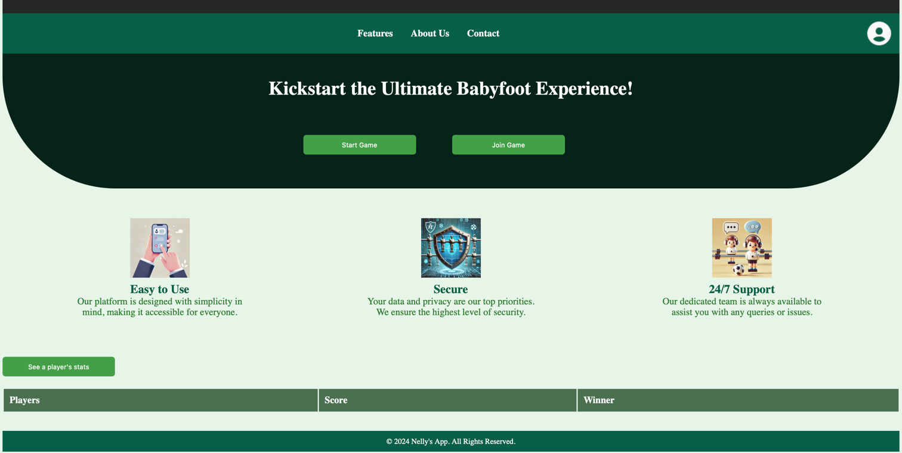
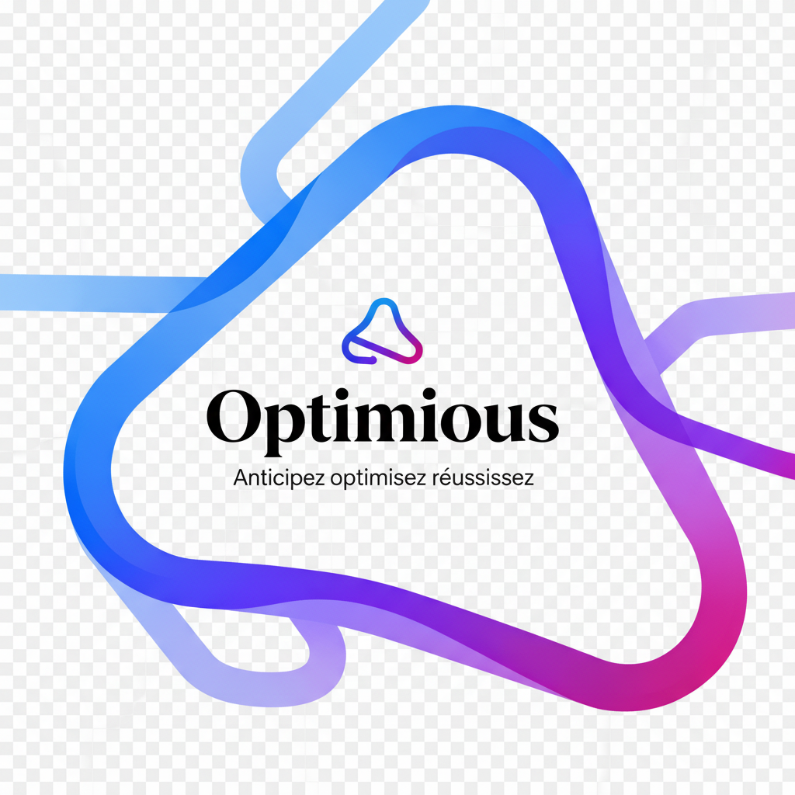

Projets en vedette
HackAtassa - Plateforme de gestion de Hackathons
Plateforme complète pour organiser et gérer des hackathons : inscriptions, gestion des équipes, soumissions de projets, évaluations et classements. Interface intuitive pour organisateurs et participants.

Footelly - Suivi de matchs de Babyfoot
Application web de suivi en temps réel de matchs de babyfoot avec gestion des scores, statistiques des joueurs, classements et historique des parties. Interface responsive et temps réel.
Projet d'automatisation des Tests avec Playwright
Conception et implémentation suite de tests automatisés (Playwright) pour tests fonctionnels. Gestion qualité : rapports détaillés, identification anomalies, création automatique de tickets interne.

Outil de gestion administrative pour PME
Développement d'une plateforme complète pour automatiser déclarations administratives (fiscales, sociales, RH, conformité) et veille réglementaire. Stack : Python/Flask, TypeScript/React, Firestore, Docker, GCP.